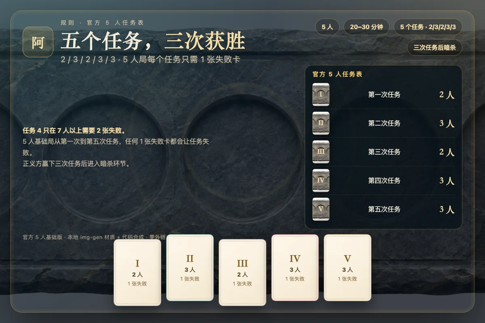

一句话规则：五名玩家分成正义与邪恶两方，队长每轮提名一支任务队伍，全体投票决定是否出发；队伍成员秘密提交成功或失败卡。正义方赢下三次任务后，刺客还有一次暗杀梅林的机会。5 人基础局共五个任务，人数依次为 2、3、2、3、3，每个任务只需要 1 张失败卡就会失败。


一、游戏目标与阵营
《Avalon》（阿瓦隆）是一款隐藏身份与团队推理桌游。五人基础局中，正义方有三名玩家：梅林、派西维尔、忠臣；邪恶方有两名玩家：莫甘娜与刺客。正义方的目标是完成三次任务，并让梅林在最后的暗杀中活下来；邪恶方的目标则是破坏三次任务、让连续五次组队被否决，或者在正义方三胜后暗杀梅林。
本实现严格采用官方 5 人基础版，不使用湖中仙女、兰斯洛特、莫德雷德、奥伯伦等扩展角色。所有身份在开局时随机发给五名玩家，每人只知道自己的身份，以及该身份规则允许知道的信息。页面不会把其他玩家的真实身份写进任何公共视图，直到对局结束才会统一翻牌。
二、五人局角色配置
| 角色 | 阵营 | 人数 | 特殊信息 |
|---|---|---|---|
| 梅林 | 正义 | 1 | 知道所有邪恶玩家是谁，但必须隐藏自己。 |
| 派西维尔 | 正义 | 1 | 知道梅林与莫甘娜，但两人不可区分。 |
| 忠臣 | 正义 | 1 | 没有额外信息，依靠推理与投票。 |
| 莫甘娜 | 邪恶 | 1 | 与刺客互相认识，在派西维尔眼中伪装成梅林。 |
| 刺客 | 邪恶 | 1 | 与莫甘娜互相认识，三胜后可以暗杀梅林。 |
五名玩家合计三好两坏。正义方人数更多，但信息并不完整；邪恶方人数更少，却知道彼此身份，并且可以在任务中打出失败卡。信息差是本作最核心的张力：梅林知道答案却不能说得太明白，派西维尔掌握两条线索却无法确认哪一条是真的。
三、五个任务与官方人数表
一局游戏最多进行五个任务。每个任务需要一支指定人数的队伍，队伍由当前队长提名，然后由全体玩家投票决定是否通过。5 人基础局的任务人数固定为：第一次任务 2 人，第二次任务 3 人，第三次任务 2 人，第四次任务 3 人，第五次任务 3 人。
| 人数 | 任务 1 | 任务 2 | 任务 3 | 任务 4 | 任务 5 | 任务 4 失败卡 |
|---|---|---|---|---|---|---|
| 5 人 | 2 | 3 | 2 | 3 | 3 | 1 张 |
| 6 人 | 2 | 3 | 4 | 3 | 4 | 1 张 |
| 7 人以上 | 2 或 3 | 3 或 4 | 3 或 4 | 4 或 5 | 4 或 5 | 2 张 |
如果前四个任务打成 2 比 2，第五个任务将决定正义方能否进入暗杀环节；如果某一方先拿到三次胜利，游戏立即进入对应结局，不再进行剩余任务。因此并非每局都会打满五个任务。
四、回合流程
- 身份阶段：每名玩家查看自己的角色卡。梅林看到两名邪恶玩家；派西维尔看到梅林与莫甘娜；莫甘娜与刺客互相看到；忠臣没有额外信息。
- 提名阶段：当前队长从五名玩家中选择恰好等于本任务人数的人组成队伍。队长可以把自己选进队伍，也可以不选。
- 投票阶段：所有玩家同时投出赞成或反对。五人局需要至少三票赞成才能通过；平票或低于三票都视为否决。
- 任务阶段：如果队伍通过，队伍成员秘密提交一张成功卡或失败卡。正义玩家只能提交成功卡；邪恶玩家可以自由选择成功或失败。
- 结算阶段：公开失败卡数量。5 人局只要出现 1 张失败卡，该任务就失败；没有失败卡则任务成功。随后公布当前比分，队长标记传给下一名玩家，进入下一个任务。
被否决时不会进入任务阶段，队长标记顺时针传给下一名玩家，由新队长重新提名。游戏会记录每一次提名、投票结果与任务结果，方便玩家复盘。
五、投票与连续否决
投票是公开结果、同时揭示的。所有玩家投完后，页面会公布每一名玩家的赞成或反对，并显示总票数。五人局中三票赞成即可通过，两票赞成、三票反对则被否决。因为共有五票，正常流程不会出现真正的平票；但如果未来扩展到更多玩家或出现弃权，引擎的统一规则是“赞成票必须严格超过半数，否则视为否决”。
连续五次组队被否决时，邪恶方立刻获胜。这里的“连续”非常关键：只要有一次队伍通过，否决计数就清零，即使那一次任务最终失败。因此邪恶方可以通过反复否决来逼迫正义方，也可以利用这一点隐藏自己的投票倾向。
六、任务卡与失败判定
任务阶段是秘密进行的。队伍成员依次提交任务卡，页面只显示“已提交人数”，不会显示谁提交了成功或失败。所有成员提交后，只公开失败卡的数量，不公开具体来源。正义玩家不能提交失败卡；如果尝试提交，引擎会直接拒绝。
5 人基础局的失败阈值是：每个任务 1 张失败卡。也就是说，只要队伍里有一名邪恶玩家选择破坏，任务就会失败。邪恶玩家也可以选择打出成功卡来伪装自己，尤其是在早期任务或需要骗取信任时。这个选择是邪恶方最重要的策略空间。
任务成功后正义方比分加一，任务失败后邪恶方比分加一。某一方先达到三分时触发对应结局：邪恶方三分立即获胜；正义方三分则进入暗杀环节。
七、三次任务与刺客暗杀
正义方完成第三次成功任务后，不会立刻获胜，而是进入暗杀环节。此时刺客仍然在场，并且知道自己的同伙莫甘娜是谁。刺客需要从其他玩家中选择一名目标；如果目标是梅林，邪恶方立刻翻盘获胜；如果目标不是梅林，梅林幸存，正义方获胜。
刺客在游戏过程中并不知道梅林的确切身份，只能通过公开信息推断：谁在队伍包含邪恶玩家时投了反对票，谁在干净队伍上积极赞成，谁的表现像是一个“知道太多”的人。派西维尔也可能表现得像梅林，这正是莫甘娜存在的重要意义：给刺客制造一个同样可疑的替身。
八、信息规则：谁能看到谁
- 梅林：看到莫甘娜与刺客是邪恶阵营，但不知道谁是莫甘娜、谁是刺客，也不知道派西维尔与忠臣的具体身份。
- 派西维尔：看到梅林与莫甘娜两名“魔法师”，两人以完全相同的标记出现，无法区分。刺客与忠臣对他来说都是未知。
- 莫甘娜与刺客：互相认识，知道对方是邪恶同伙，但不会获得梅林或派西维尔的身份。
- 忠臣：没有特殊信息，只能看到公共信息。
公共信息包括：任务轨道、每名玩家是否在队伍中、投票结果、任务失败卡数量、连续否决次数、队长标记与日志。任务卡的具体提交者和所有未公开身份都不会进入公共视图。只有对局结束后，页面才会统一翻开五名玩家的角色。
九、策略要点
- 梅林要“够用就好”。你不需要每轮都精准避开邪恶，也不能表现得太完美。过度精准的反对票会让你在刺客眼中变成最明显的目标。
- 派西维尔要保护真梅林。你看到的两个魔法师中有一个是莫甘娜。不要过早站边，观察谁的投票模式更像“知道所有邪恶”的人。
- 忠臣要制造信息。你没有特殊情报，但你的投票、发言和对队伍的态度会成为别人判断你的依据。认真记录谁在保护谁。
- 邪恶要控制节奏。不是每个任务都必须破坏。早期成功一次可以换取信任，关键任务再出手；同时可以利用连续否决逼迫正义方。
- 刺客要记住投票。正义三胜后，你能依靠的只有公开历史。谁在邪恶队伍上反对、谁在干净队伍上赞成，谁就是最像梅林的人。
十、本实现的交互说明
- 单机模式中你坐在圆桌下方，另外四名 AI 会依次提名、投票、提交任务卡；轮到你时，页面会显示可点击的座位或行动按钮。
- 提名阶段点击座位选择队伍，确认按钮会显示“已选人数 / 所需人数”；票数不足时按钮不可用。
- 投票阶段点击“赞成”或“反对”；任务阶段正义方只有“任务成功”，邪恶方可以选择“任务成功”或“破坏任务”。
- 快捷键：提名阶段按 1–5 选择座位，按 Enter 确认队伍；投票阶段按 A 赞成、R 反对；任务阶段按 S 成功，邪恶玩家按 F 破坏。
- 右上角 ◐ 切换深色 / 浅色主题，♪ 开关音效；音效由共享合成器实时生成，不加载任何音频文件。
- 页面完全离线运行，不加载外部字体、图片、脚本或样式表。所有材质均来自本地 img-gen 单物件素材，由代码合成。
- 联机模式下，服务端为每个座位单独生成视图；两名真人加三名 AI 恰好坐满五个座位，断线十五秒后由 AI 托管，重连即可恢复。
十一、B 站规则来源
- 【桌游规则】阿瓦隆AVALON基础规则讲解 UP：是你大菇子呀 · BV1Ym4y1Q7Gq · https://www.bilibili.com/video/BV1Ym4y1Q7Gq 规则要点：五人局固定梅林、派西维尔、忠臣、莫甘娜、刺客；队长提名后全体投票；任务成员秘密提交成功或失败。
- 阿瓦隆完整规则 UP：桌游鼠王 · BV16CYPzLE7p · https://www.bilibili.com/video/BV16CYPzLE7p 规则要点：五个任务的人数表与失败阈值；正义方三次任务后进入暗杀；连续五次组队被否决由邪恶方获胜。
- 《阿瓦隆》桌游教学 UP：雷老板向太阳 · BV1JZtZetESQ · https://www.bilibili.com/video/BV1JZtZetESQ 规则要点：派西维尔看到梅林与莫甘娜但无法区分；邪恶玩家互相认识；刺客暗杀梅林后邪恶方翻盘。
以上视频仅作为规则校对来源；本页文字、牌面图形、动画与 AI 均为本项目原创实现，未复制视频画面或音频。
十二、常见问题
问：5 人局任务 4 真的只要 1 张失败卡吗？是的。官方 5 人基础局五个任务都只需要 1 张失败卡。需要两张失败卡的是 7 人以上游戏的任务 4，不要把它套用到五人局。
问：派西维尔看到两个魔法师，能知道谁是梅林吗？不能。梅林与莫甘娜在派西维尔眼中完全相同，他只能通过发言、投票与任务结果推断。莫甘娜的存在就是为了制造这个误判。
问：正义方完成三次任务后为什么还要暗杀？这是阿瓦隆的核心平衡机制。正义方即使完成了任务，也必须保护梅林不被刺客认出；邪恶方则保留最后一次翻盘机会。
问：任务失败卡会公开是谁打的吗？不会。只公开失败卡数量。邪恶玩家可以选择成功来隐藏自己，因此任务结果本身也是信息的一部分。
问：连续五次否决后还能继续吗？不能。第五次否决立刻结束游戏，邪恶方获胜。任何一次队伍通过都会把计数清零。
问：两个人可以玩吗？本实现采用官方 5 人基础局。单人模式由你加四名 AI；联机模式由两名真人加三名 AI 恰好坐满五席。人数不足时由 AI 补位，但角色配置与任务表始终按 5 人执行。